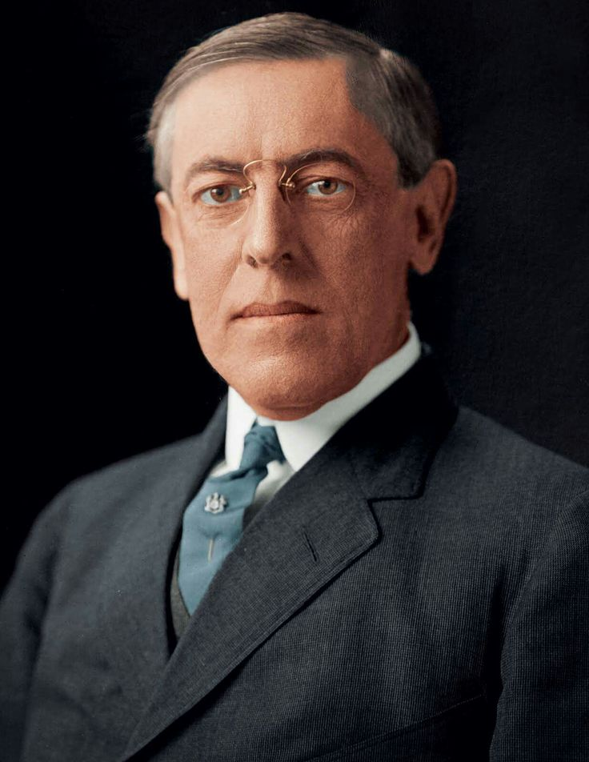

SumberWOODROW WILSON adalah Presiden Amerika Serikat ke-28 (1913–1921) yang dikenal karena kepemimpinannya selama Perang Dunia I dan perannya dalam membentuk Liga Bangsa-Bangsa. Ia juga memperkenalkan banyak reformasi progresif di dalam negeri.
Nama Lengkap: Thomas Woodrow Wilson Lahir: 28 Desember 1856, Staunton, Virginia, AS Meninggal: 3 Februari 1924, Washington, D.C., AS Jabatan: Presiden AS ke-28 (1913–1921) Partai: Demokrat
Wilson berasal dari keluarga religius di Selatan AS. Ia belajar di Princeton University, kemudian meraih gelar hukum dari University of Virginia. Ia juga meraih gelar doktor dari Johns Hopkins University, menjadikannya satu-satunya Presiden AS yang memiliki gelar PhD. Sebelum terjun ke politik, Wilson adalah seorang akademisi dan pernah menjadi Presiden Princeton University (1902–1910).
1911–1913: Gubernur New Jersey, di mana ia menerapkan reformasi progresif dalam pemerintahan. 1912: Terpilih sebagai Presiden AS setelah mengalahkan William Howard Taft dan Theodore Roosevelt dalam pemilihan tiga arah.
1. Reformasi Domestik (The New Freedom) Mengawasi pembentukan Federal Reserve System (bank sentral AS). Membantu mengesahkan Undang-Undang Antimonopoli Clayton untuk membatasi monopoli bisnis. Menerapkan Undang-Undang Pajak Pendapatan untuk mendanai program pemerintah. 2. Peran dalam Perang Dunia I (1914–1918) Awalnya berusaha menjaga netralitas AS, tetapi akhirnya terlibat setelah Jerman melancarkan perang kapal selam tanpa batas dan mengirim Telegram Zimmermann ke Meksiko. 1917: AS bergabung dengan Sekutu (Inggris, Prancis, Rusia) melawan Jerman dan Blok Sentral. 1918: Wilson mengajukan 14 Poin Perdamaian, yang menekankan hak bangsa untuk menentukan nasib sendiri dan perdamaian dunia. 3. Liga Bangsa-Bangsa dan Perjanjian Versailles Wilson adalah arsitek utama Liga Bangsa-Bangsa, pendahulu PBB, untuk mencegah perang di masa depan. Namun, Senat AS menolak Perjanjian Versailles, sehingga AS tidak pernah bergabung dengan Liga Bangsa-Bangsa.
1919: Wilson mengalami stroke, yang membuatnya lumpuh sebagian dan melemahkan kepemimpinannya. 1921: Masa jabatannya berakhir, dan ia pensiun dari politik. 1924: Meninggal di Washington, D.C.
✅ Dampak Positif: Menciptakan Liga Bangsa-Bangsa, yang menjadi dasar PBB. Menerapkan reformasi ekonomi yang memperkuat sistem keuangan AS. Mempromosikan hak penentuan nasib sendiri bagi negara-negara kecil. ❌ Dampak Negatif: Gagal meyakinkan Senat AS untuk bergabung dengan Liga Bangsa-Bangsa. Memperketat segregasi rasial di pemerintahan AS, meskipun ia seorang progresif. Menekan kebebasan berbicara selama Perang Dunia I dengan Espionage Act dan Sedition Act. Woodrow Wilson tetap dianggap sebagai salah satu presiden paling berpengaruh dalam sejarah AS, terutama karena perannya dalam Perang Dunia I dan Liga Bangsa-Bangsa.